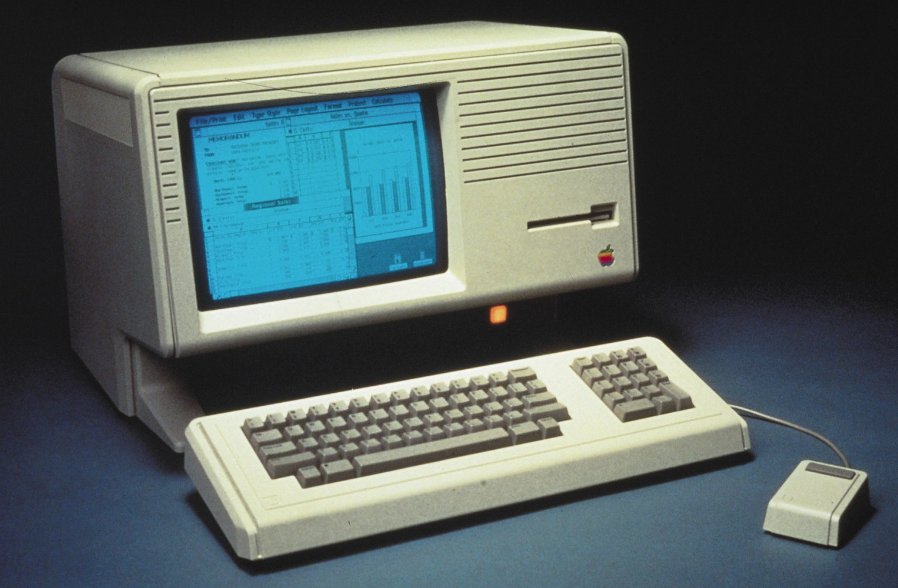
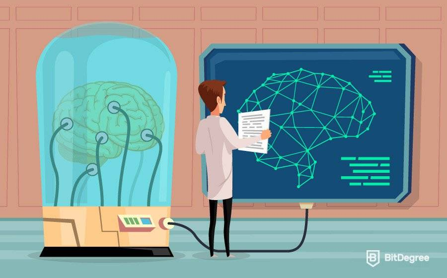

Investigacion sobre la Inteligencia Artificial(IA)
Definicion de IA
es una rama de la informática que se ocupa del diseño y desarrollo de sistemas y programas informáticos capaces de realizar tareas que, por lo general, requieren inteligencia humana, como el aprendizaje, la percepción, el razonamiento y la resolución de problemas. La IA se basa en la creación de algoritmos y modelos matemáticos que simulan el comportamiento y la cognición humana, con el fin de permitir a las máquinas aprender, adaptarse y mejorar con el tiempo. Los sistemas de IA pueden ser diseñados para llevar a cabo tareas específicas, como reconocimiento de voz, clasificación de imágenes o predicción del tiempo, o para realizar tareas más complejas, como la conducción autónoma o el diagnóstico médico. La IA es una tecnología en constante evolución que tiene el potencial de transformar la forma en que vivimos y trabajamos, y su uso es cada vez más común en una amplia variedad de campos.
Evolución de la Inteligencia Artificial
La inteligencia artificial (IA) ha evolucionado considerablemente desde sus comienzos en la década de 1950. En los primeros años, la IA se centró principalmente en el desarrollo de sistemas de reglas y lógica simbólica para resolver problemas complejos. A medida que la capacidad de procesamiento y la cantidad de datos disponibles aumentaron, la IA se trasladó al aprendizaje automático, donde los algoritmos pueden aprender de los datos sin ser programados explícitamente.
La Era de la Computación
Se da durante la década de 1950, los científicos comenzaron a investigar cómo las computadoras podrían ser programadas para imitar la inteligencia humana. Esta era se caracterizó por la creación de algoritmos y programas de lógica que imitaban las habilidades cognitivas humanas.
La Era del Conocimiento
Se dio a fines de la década de 1970, los científicos comenzaron a investigar cómo las computadoras podrían utilizar la información almacenada para razonar y resolver problemas. Esta era se caracterizó por la creación de sistemas expertos y la inteligencia artificial basada en reglas.
La Era del Aprendizaje Automático

A partir de la década de 1980, los científicos comenzaron a investigar cómo las computadoras podrían aprender a partir de los datos. Esta era se caracterizó por la creación de algoritmos de aprendizaje automático y redes neuronales artificiales.
La Era del Aprendizaje Profundo
A partir de la década de 2010, los científicos comenzaron a investigar cómo las redes neuronales profundas podrían aprender a partir de grandes cantidades de datos sin la necesidad de programación manual.
Enfoques de la Inteligencia Artificial
Enfoque de la Filosófia
Aristóteles (384-322 a.C.) fue el primero en formular un conjunto preciso de leyes que gobernaban la parte racional de la inteligencia. Él desarrolló un sistema informal para razonar adecuadamente con silogismos, que en principio permitía extraer conclusiones mecánicamente, a partir de premisas iniciales. Mucho después, Ramón Lull (d. 1315) tuvo la idea de que el razonamiento útil se podría obtener por medios artificiales. Sus «ideas» aparecen representadas en la portada de este manuscrito. Thomas Hobbes (1588- 1679) propuso que el razonamiento era como la computación numérica, de forma que «nosotros sumamos y restamos silenciosamente en nuestros pensamientos».

Aristóteles (384-322 a.C.)
Enfoque de la Robótica
La robótica es una disciplina que se ocupa del diseño, construcción, operación y uso de robots. Los robots son máquinas programables capaces de realizar una variedad de tareas físicas y cognitivas. En el contexto de la inteligencia artificial, la robótica puede ser vista como una aplicación de la IA en la creación de robots inteligentes capaces de realizar tareas complejas de manera autónoma. La robótica aplicada a la inteligencia artificial puede incluir el diseño y construcción de robots que sean capaces de percibir y comprender su entorno, tomar decisiones autónomas y aprender de sus experiencias. Por ejemplo, los robots pueden ser programados para reconocer objetos y personas, seguir rutas predefinidas o incluso interactuar con seres humanos de manera natural y fluida.

Robotica y Inteligencia Artificial
Enfoque Matemático
uno de los grandes aportes que dio la matemática a la inteligencia artificial fue la creación del cálculo proposicional y el cálculo de predicados. Estos cálculos permitieron la formalización del razonamiento lógico, lo que permitió la creación de sistemas de inteligencia artificial que pudieran deducir conclusiones a partir de un conjunto de premisas. Además, la teoría de la computación de Alan Turing permitió la formalización del concepto de algoritmo y la posibilidad de que una máquina pudiera realizar tareas de manera autónoma. Estos aportes matemáticos fueron fundamentales en el desarrollo de la inteligencia artificial moderna.

IA en las matemáticas
Enfoque en la Educación
La inteligencia artificial (IA) puede ayudar a superar algunos de los mayores desafíos que enfrenta actualmente la educación, a través de la implementación de prácticas innovadoras de enseñanza y aprendizaje y del avance hacia la consecución del Objetivo de Desarrollo Sostenible (ODS). Sin embargo, el rápido avance tecnológico de la IA también plantea varios riesgos y desafíos que aún no han sido completamente abordados por las políticas y regulaciones existentes.
IA en la educación
Marco Conceptual
Robótica
La robótica se enfoca en diseñar sistemas que incluyen actuadores de locomoción, manipuladores, sistemas de control, sensores, fuentes de energía y software de calidad. Estos subsistemas tienen que ser diseñados para trabajar juntos de manera coordinada para lograr las tareas del robot. La robótica es una disciplina interdisciplinaria que utiliza conocimientos de mecánica, electrónica e informática para crear robots que puedan funcionar de manera autónoma y eficiente. El objetivo principal de la robótica es desarrollar robots capaces de realizar tareas que mejoren la calidad de vida humana y amplíen las capacidades de la tecnología.
Robótica
Juegos
es un conjunto de reglas y objetivos que se pueden modelar matemáticamente y que se pueden implementar en una máquina para que esta pueda jugar contra un ser humano u otro programa de IA. Se ha utilizado en juegos para desarrollar sistemas capaces de tomar decisiones autónomas, aprender de la experiencia y mejorar su rendimiento con el tiempo. La investigación en IA y juegos ha llevado a importantes avances en áreas como el aprendizaje por refuerzo, la planificación y la toma de decisiones bajo incertidumbre. Por ejemplo, según lo investigado por Russell, S. & Norvig,P. (2010), el sistema de inteligencia artificial Deep Blue de IBM fue el primero en lograr vencer a un campeón mundial de ajedrez, específicamente a Garry Kasparov, en una partida de exhibición con un resultado de 3.5 a 2.5. Kasparov expresó que notó una "nueva forma de inteligencia" en su oponente a través del tablero. La partida fue ampliamente divulgada por la revista Newsweek como "La partida final" y resultó en un aumento de 18 billones de dólares en el valor de las acciones de IBM.
Deep Blue
Conclusiones
- La evolución de la inteligencia artificial ha sido impulsada por el aumento de la capacidad de procesamiento, la disponibilidad de grandes cantidades de datos y el desarrollo de algoritmos de aprendizaje automático cada vez más sofisticados.
- La IA ha pasado por varias etapas importantes, comenzando con la era de la computación y avanzando hacia la era del conocimiento, el aprendizaje automático y el aprendizaje profundo. Cada era ha sido caracterizada por diferentes enfoques y tecnologías.
- Se espera que la IA continúe evolucionando y mejorando en el futuro, lo que probablemente conducirá a un cambio significativo en la forma en que interactuamos con la tecnología y el mundo que nos rodea. Esto podría incluir avances en áreas como el procesamiento de lenguaje natural, la robótica y la visión por computadora.
- Los sistemas de IA pueden ser diseñados para llevar a cabo tareas específicas, como reconocimiento de voz, clasificación de imágenes o predicción del tiempo, o para realizar tareas más complejas, como la conducción autónoma o el diagnóstico médico. En general, la IA se puede utilizar en una amplia variedad de campos, desde la atención médica hasta la industria manufacturera y la agricultura, y tiene el potencial de transformar la forma en que vivimos y trabajamos.